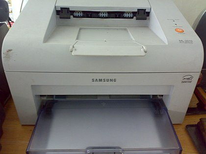

Una impresora es un dispositivo periférico de salida del ordenador que permite producir una gama permanente de textos o gráficos de documentos almacenados en un formato electrónico, imprimiéndolos en medios físicos, normalmente en papel, utilizando cartuchos de tinta o tecnología láser (con tóner).
 Volver